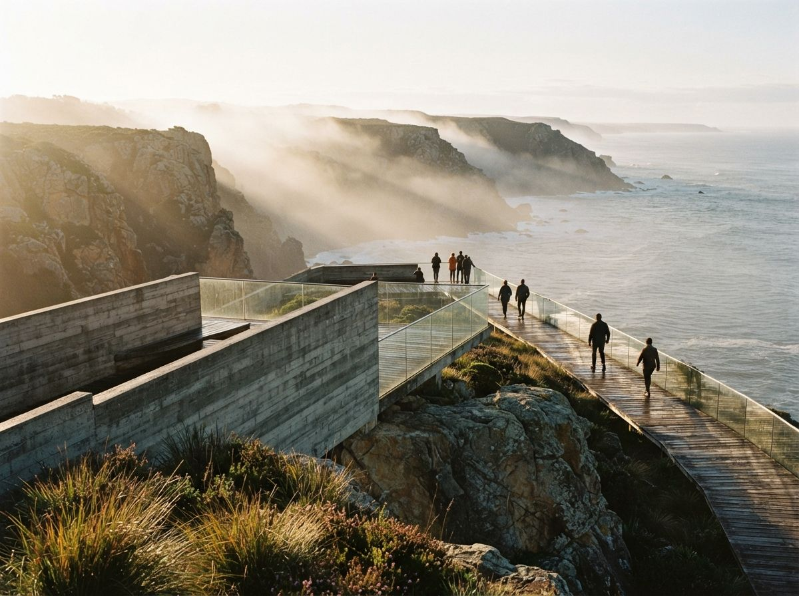

ArkoAI turned up in this morning's sweep the way most tools turn up here, as a name in someone else's comparison table with no detail attached. It has been around since at least 2023, it runs inside SketchUp, Rhino and Revit, and we have never written about it. Worth a look, particularly because the thing it gets right is the thing we spent yesterday's piece complaining nobody gets right.
What it actually is
A plugin-native cloud renderer. You install it into the host application, frame a view in your model, and it sends that view up to be processed. You are not exporting a PNG, opening a browser, uploading, downloading, and reimporting. That roundtrip is the tax most generative tools charge, and we have argued before that where the tool lives matters more than its model quality for anything you do more than twice a day.
The install is not from the Extension Warehouse. On Windows it is a manual installer, which caught people out in the support forum and will catch out anyone in a studio where IT controls software installation. Worth knowing before you promise a colleague a demo.
Where it runs
| Host | Versions | Platform |
|---|---|---|
| SketchUp | 2021 to 2026 | Windows and macOS |
| Revit | 2021 to 2026 | Windows only |
| Rhino | Rhino 7 | Windows only |
Two things in that table are worth stopping on. The SketchUp support runs to 2026 on both platforms, which is genuinely current and better than a lot of the plugin market manages. The Rhino line is the opposite. Rhino 7 only, with Rhino 8 long since shipped and widely adopted. If you are a Rhino practice on 8, this tool is not for you today, and no comparison table listing "Rhino" as a supported host will tell you that.
Revit going back to 2021 is a mild point of interest too, because Veras, the tool ArkoAI is most often ranked against, starts at Revit 2022. If you are on an old Revit for contractual reasons, that difference decides the purchase on its own.
The two modes, and why they matter
Here is the design decision that makes ArkoAI worth writing about.
Render mode holds your geometry. It renders context, materials and light onto the model you built, and it is not supposed to move a wall. Ideate mode lets the model change the geometry, so you can push a massing study somewhere you have not drawn yet.
Every generative rendering tool sits somewhere on this axis. Almost none of them put the axis in the interface. You get a "creativity" slider with no units, or a strength value between zero and one, and you learn by ruining a render at 4pm that 0.6 was the number where your mullions dissolved. ArkoAI's split is coarser than a slider and much clearer: this run may not invent, that run may.
A slider tells you how much. A named mode tells you what kind. Only one of those is a question you can answer before you have seen the output.
The practical value is not artistic, it is procedural. It means you can tell a junior "concept package in Ideate, planning package in Render" and have that instruction actually mean something. It means the QA checklist changes per mode rather than per render. An Ideate output needs the full geometry check before it goes anywhere near a client. A Render output needs the much shorter material and lighting pass. Two different jobs, and the tool has told you which one you are holding.
Trust it partially, though. "Render mode preserves geometry" is a vendor claim about a generative model, and generative models are not deterministic by nature. Test it before you rely on it: same view, same settings, three runs, and compare the window head heights. If they move, the mode is a strong hint rather than a guarantee, and you treat it accordingly. That test takes ten minutes and settles the question permanently for your version of the tool.
Pricing, and a small mess
Here is where a first look has to be honest about the limits of what we checked. Third-party listings for ArkoAI currently quote entry pricing at $25, $30 and $39 per month, with a studio tier somewhere near $139 per seat. That is a wide spread for a single product, and it is the usual cause: aggregator pages, review sites and directory listings each captured a number at a different moment and none of them went back.
We are not going to pick one and present it as fact. Read the number off the vendor's own pricing page on the day you buy, and treat every directory figure, including any we quote in a comparison table, as a rumour with a date on it. The free trial is reported at 30 renders, which is enough to answer the geometry-drift question above and not much more, so plan what you spend it on.

The cloud part is not a detail
ArkoAI processes remotely. That is the trade that makes it work: no local GPU requirement, nothing to configure, a laptop in a meeting room performs the same as the workstation in the corner. For small practices without rendering hardware that is the whole value proposition, and it is a real one.
It also means your model view leaves the building. Every render is an upload of a project you are probably under an NDA about. This is not specific to ArkoAI, it is true of most of the generative wing, and we have written about what cloud dependency costs a practice in more detail. The short version for a first look: check the terms before the first confidential project goes through, not after. Ask whether your uploads are retained, whether they are used for training, and what happens to work in progress if the service has an outage on the afternoon of a submission.
The second cost is availability. A local renderer works when the vendor's servers do not. A cloud plugin does not, and no amount of subscription tier changes that. If a deadline render has to happen at 11pm regardless, keep something local that can produce an acceptable image, even a plain one. Treat the cloud tool as the fast path rather than the only path.
Our take
ArkoAI is not the most capable generative renderer available and this is not a review that says buy it. What it is: a well-positioned plugin for SketchUp and Revit practices who want generation without leaving the model, with an unusually honest interface and a Rhino story that is a version behind where it needs to be.
The mode split is the reason to trial it even if you end up elsewhere. Most of this market is competing on output quality, which converges every few months anyway, and almost nobody is competing on telling you what the model is allowed to do. That is the axis that survives the next model upgrade. Output quality is a moving target the vendors chase for you. Knowing whether your render is a picture of your building or a picture of a building is a permanent professional requirement, and a tool that answers it with a button rather than a paragraph of marketing has done something the price sheet will never show.
Try it in Render mode first. If your geometry holds across three runs, you have found something more useful than a renderer. You have found a vendor who means what the label says.
Written from the 18 July 2026 intel sweep. Host application and version support verified against ArkoAI's own site on 18 July 2026; installation and early-adoption notes drawn from the SketchUp Community extension thread. Pricing figures are third-party directory values and are quoted only to show their disagreement, not as vendor-confirmed prices.